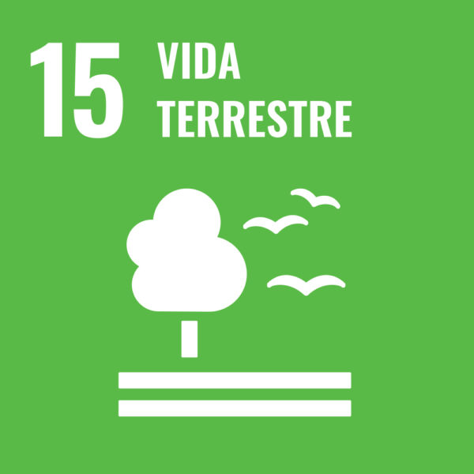
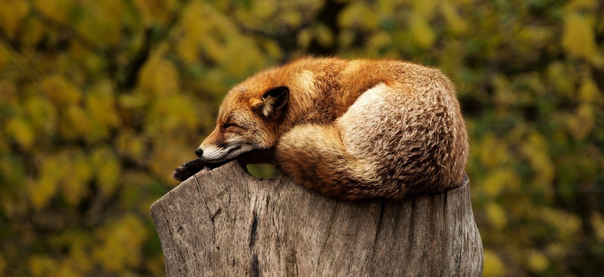

Vida terrestre
Os ODS representam um plano de ação global para eliminar a pobreza extrema e a fome,
oferecer educação de qualidade ao longo da vida para todos, proteger o planeta e promover sociedades pacíficas e inclusivas até 2030
ODS15.
Vida terrestre

A vida terrestre aborda, especificamente, a flora e a fauna e os desafios que a
humanidade tem enfrentado com relação à proteção do meio ambiente, bem como o uso sustentável dos ecossistemas terrestres.
É necessário aprender como gerir as florestas e combater as consequências que surgem em decorrência do desmatamento,
como a desertificação, degradação dos solos e perda da biodiversidade.
‘‘Proteger, recuperar e promover o uso sustentável dos ecossistemas terrestres, gerir de forma sustentável
as florestas, combater a desertificação, deter e reverter a degradação da terra e deter a perda.
’’ O mote que movimenta o objetivo que trabalharemos hoje, nos inspira a pensar e agir para a mudança do atual cenário de deterioração do meio ambiente.
Tal qual o 15° Objetivo de Desenvolvimento Sustentável da ONU, o 14°, Vida na Água, se conecta a importante temática de manutenção e preservação da biosfera.
De onde a mudança parte?
É certo afirmar que hábitos diários como a economia de água e energia, reciclagem e redução de lixo, descarte responsável
e o ajuste da alimentação para consumo de produtos orgânicos e de agricultura familiar podem ajudar na pauta ligada à Vida Terrestre.
Entretanto, a mudança global também deve ser pensada a partir dos grandes meios de produção e consumo desenfreado.
No Brasil, às leis de regulamentação relativas à proteção florestal buscam resolver a problemática, mas por vezes as mudanças legislativas ambientais apontam para um cenário ainda mais desanimador.

Vida terrestre no contexto brasileiro
Os seres vivos dependem do meio ambiente para realização das mais diversas e básicas tarefas, especialmente quando se considera o caráter de sobrevivência,
na busca e obtenção de elementos como água, alimento, ar e abrigo.
Os animais e a vegetação se adaptam ao ambiente no qual vivem, porém, essas adaptações não são imediatas e extremas,
principalmente quando consideramos o alto nível de degradação de suas ambiências. Como explicitado pelo PNUD (Programa das Nações Unidas para o Desenvolvimento), o presente momento marca uma triste regressão sem precedentes,
com a degradação do solo e perdas de terras cultiváveis de 30 a 35 vezes maior que a média histórica.
As perspectivas não são boas, pois a cada ano a seca aumenta, milhões de hectares relacionados à vegetação são perdidos, e assim,
das mais de 8.300 espécies de animais conhecidas no Brasil (vertebrados), 8% estão extintas e 22% correm o risco de extinção.
Mitigar os desastres relacionados à mudança global do clima é uma das metas da Agenda 2030.

Os dados são alarmantes, pois de acordo com IBGE, entre os anos de 2000 e 2018, aproximadamente 2,1 mil km² em área do Pantanal foram devastados.
Até então, este era o bioma brasileiro mais preservado. No último ano, em 2020, a perda pelo fogo alcançou aproximadamente 23 mil km²,
superando em 10 vezes a área de vegetação natural perdida ao longo de 18 anos.
veja outras estrategias dos ods aqui